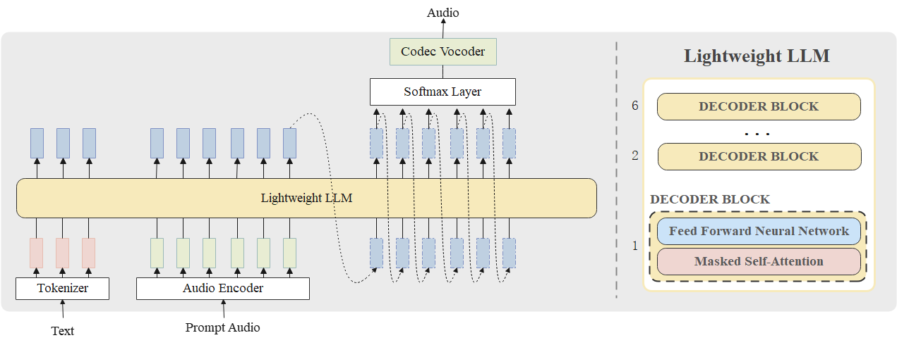

Lightweight Language Model for Speech Synthesis:
Attempts and Analysis
Abstract. Large-scale autoregressive text-to-speech (TTS) models can generate speech that is nearly indistinguishable from human speech. However, training large language models (LLMs) is challenging due to memory and computational constraints. This paper describes our TTS method for the 2024 Conversational Voice Clone Challenge (CoVoC). Our approach modifies the LauraGPT model to synthesize mixed Chinese and English text by expanding the Chinese pinyin vocabulary and reducing the number of layers in the decoder-only Transformer architecture. Despite using minimal training data, the performance gap between our method and other constrained systems is relatively small in both subjective and some objective evaluations. This paper discusses our attempt to train lightweight LLMs for zero-shot TTS and analyzes the factors contributing to low performance.
Contents
System Overview

Figure 1. An overview of our proposed system
Audio Samples
| Prompt | Generation |
|---|---|
我觉得是这样的就是嗯这个东西呃，粗浅的称呼它为稚气吧。 |
|
啊，再加上啊以前确实我也有一个考飞行员的一个计划。 |
|
自动挡只需要踩个油门，然后把个方向盘就ok了。 |
|
但是如果你们的双方，啊这个差距太大的话，可能会有一些不可调和的一些观念上的区别，你懂我意思吗？ |
|
但是你不能说就是家庭环就是嗯就是你懂我意思吧，就是他家庭环境不太好的孩子不能说他家教一定不好。 |
|
然后有一次啊我就对吧我说人生多尝试嘛，然后我就放弃了飞机坐了高铁，然后八个半小时从武汉到昆明。 |
|
因为罗平线那边有一个瀑布群，是非常好看的，叫九龙瀑布群，啊所以我们就驱车前往了。然后当天在那边感受了一下这个啊泛舟游于小溪之上的这种嗯算是武侠仙侠的感觉吧。虽然和大家想象中啊这种轻松惬意的感觉有些不同，啊因为如果去到了瀑布下面真的风非常的大，然后水气也很大。 |
|
大漠，多么熟悉的大漠，但现在在金镶玉眼睛里，竟透出几许陌生的意味。是不是因为物虽如旧，人事却非？也可能是因为她的心，已不再是离开前那颗幼稚的心，它已多了许多沧桑，许多回忆，许多遗忘。金镶玉匹马前行，行了许久，竟没有回头望一眼。因为她知道，属于她的地方，永远是这冷酷无情的沙漠，她再也经不起风光旖旎的情感世界，她的心里有一个人的影子，在她今后的生命里，她一定会时常记起这个人，也会记起他的话：回到大漠去，在那里，你才是王者，智者。中原，不是属于你的地方。她的马后，一片生机盎然，花红柳绿；眼前，却是一派苍黄，风急沙狂，也许还有一个地方会使她能慢慢抚平创伤，她看到它时，心里会有种回家的感觉。是龙门客栈，似乎永远存在于沙漠中的龙门客栈。 |
|
他们究竟是什么势力呢？以卫鞅对天下民间力量的了解，竟是想不清来路。能在栎阳城将三十个墨家剑客在片刻之间干净利索的赶走，绝不是等闲门派。战国学派中，能和墨家在秘密行动上一争高下者，惟有鬼谷子一门。其余学派虽多有深藏不露的特出剑士，但毕竟是修学为主，不可能实施这种霹雳风暴般的袭击行动。即或是名将渊薮的兵家，也因志不在此，而素来不搞秘密行动。那么说，是鬼门发动了这场袭击？有可能。因为鬼谷子一门在政学上是坚定的法家，历来反对墨家用大而无当的“兼爱非攻”干预国家法制。再者，鬼门多奇能异士，高明如百里老人者当有百数十人之多，虽在整体行动上与墨家无法抗衡，但在一次行动中击败墨家还是完全有可能的。 |